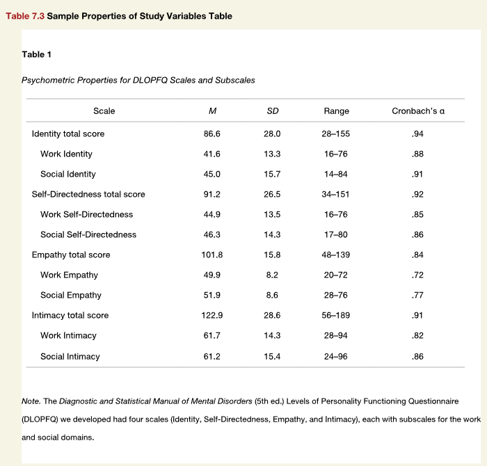

library(apa7)
library(flextable)
library(ftExtra)
library(tidyverse)
set_flextable_defaults(theme_fun = theme_apa,
font.family = "Times New Roman")Recreating APA Manual Table 7.3 in R with apa7
R
APA Style
Demonstration of the apa7 package, a flextable extension package
Making tables in APA style (Part 3 of 24)
In this 24-part series, each of the tables in Chapter 7 of the Publication Manual of the American Psychological Association (7th Edition) is recreated with apa7, flextable, easystats, and tidyverse functions.
NoteHighlights
Figure 1
Screenshot of the APA Manual’s Table 7.3

APA Manual Table 7.3 in Figure 1 was easier to reproduce than the first two tables in this series. Because only simple indentation was required, it was easy to indent subscale rows in Table 1 with the padding function.
The surround function provides internal lines. I make the internal lines a lighter gray than the header and bottom lines.
Whereas the mean and standard deviation columns needed decimal alignment (provided automatically with apa_flextable), the Range column looked better if aligned on the en-dash character (–). The align_chr function makes use of the signs function, which not only gives negative numbers a true minus sign, but also can trim leading zeroes for probabilities, correlations, and reliability coefficients, which happens automatically for the cronbach column.
```{r}
#| label: tbl-73
#| tbl-cap: Psychometric Properties for DLOPFQ Scales and Subscales
#| apa-note: "The *Diagnostic and Statistical Manual of Mental Disorders*
#| (5th ed.) Levels of Personality Functioning Questionnaire
#| (DLOPFQ) we developed had four scales (Identity, Self-
#| Directedness, Empathy, and Intimacy), each with subscales
#| for the work and social domains."
# Make data
d <- tibble::tribble(
~Scale, ~M, ~SD, ~Range, ~`cronbach`,
"Identity total score", 86.6, 28, "28–155", 0.94,
"Work Identity", 41.6, 13.3, "16–76", 0.88,
"Social Identity", 45, 15.7, "14–84", 0.91,
"Self-Directedness total score", 91.2, 26.5, "34–151", 0.92,
"Work Self-Directedness", 44.9, 13.5, "16–76", 0.85,
"Social Self-Directedness", 46.3, 14.3, "17–80", 0.86,
"Empathy total score", 101.8, 15.8, "48–139", 0.84,
"Work Empathy", 49.9, 8.2, "20–72", 0.72,
"Social Empathy", 51.9, 8.6, "28–76", 0.77,
"Intimacy total score", 122.9, 28.6, "56–189", 0.91,
"Work Intimacy", 61.7, 14.3, "28–94", 0.82,
"Social Intimacy", 61.2, 15.4, "24–96", 0.86
)
# Format data
d_formatted <- d |>
mutate(Range = align_chr(Range, center = "–"))
# Make table
d_formatted |>
apa_flextable(layout = "fixed") |>
padding(j = 1,
i = ~!stringr::str_ends(Scale, "total score"),
padding.left = 16) |>
width(width = 1.1) |>
width(j = 1, 2.1) |>
surround(i = c(4,7,10),
border.top = fp_border_default(color = "gray60"))
```Table 1
Psychometric Properties for DLOPFQ Scales and Subscales
Scale | M | SD | Range | Cronbach’s α |
|---|---|---|---|---|
Identity total score | 86.60 | 28.00 | 28–155 | .94 |
Work Identity | 41.60 | 13.30 | 16–76 | .88 |
Social Identity | 45.00 | 15.70 | 14–84 | .91 |
Self-Directedness total score | 91.20 | 26.50 | 34–151 | .92 |
Work Self-Directedness | 44.90 | 13.50 | 16–76 | .85 |
Social Self-Directedness | 46.30 | 14.30 | 17–80 | .86 |
Empathy total score | 101.80 | 15.80 | 48–139 | .84 |
Work Empathy | 49.90 | 8.20 | 20–72 | .72 |
Social Empathy | 51.90 | 8.60 | 28–76 | .77 |
Intimacy total score | 122.90 | 28.60 | 56–189 | .91 |
Work Intimacy | 61.70 | 14.30 | 28–94 | .82 |
Social Intimacy | 61.20 | 15.40 | 24–96 | .86 |
Note. The Diagnostic and Statistical Manual of Mental Disorders (5th ed.) Levels of Personality Functioning Questionnaire (DLOPFQ) we developed had four scales (Identity, Self- Directedness, Empathy, and Intimacy), each with subscales for the work and social domains.